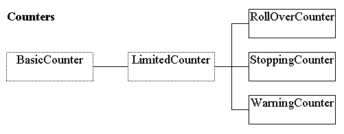

The hierarchy consists of the abstract BasicCounter which provides the essential counting functionality, it is not quite an analog of real-world concept as it has the capability to un-count as well as to count. Its only child is the abstract LimitedCounter which introduces limits upon the range which can be counted between and three sibling classes which differ in the behaviour at the limits.
The RollOverCounter will count from the upper to the lower limit and un-count from the lower to the upper limit. The StoppingCounter will merely remain at the limit and the WarningCounter will warn, by throwing an exception, if an attempt is made to count or un-count beyond its limits.